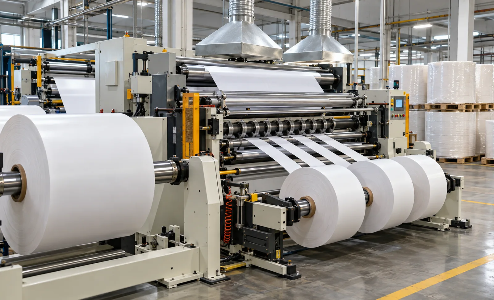
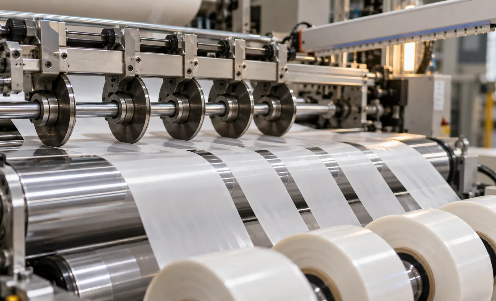

Published September 28, 2026 | By HDPTH Technical Editorial Team

Sustainability targets are pushing converters into materials their existing equipment was never specified for. Compostable films certified under schemes such as EN 13432 or ASTM D6400, recyclable mono-material structures and fiber-based packaging webs are entering order books alongside conventional PE, PET and BOPP. A slitter rewinder that performs beautifully on stiff polyester can struggle on a soft PLA web or a coated paper laminate. Buyers who raise tension, knife, static and winding points during quotation avoid the expensive discovery that a machine "runs film" but cannot hold edges on the new material.
Why compostable webs behave differently
Many compostable polymers are softer and less stiff than the commodity films they replace. PLA softens at temperatures that PET tolerates easily; PBAT and starch blends are often tacky or low-slip; paper-based structures are hygroscopic and can corrugate when tension is uneven. The practical consequences are a narrower usable tension window, higher sensitivity to roller defects and heat, and edges that fuzz or dust more readily. Friction behavior differs too: some surfaces are slippery, which challenges winding; others are tacky, which challenges release from rollers. None of this is a reason to avoid the materials—only to make the supplier prove the configuration on your material.
Material families and what they change
PLA and PLA blends
PLA films are dimensionally stable at room temperature but heat-sensitive: rollers, friction and ambient conditions matter more than with PET. Specify low-tension capability with good resolution, smooth or covered rollers where appropriate, and knife setups verified on the actual grade. Ask how the machine behaves during long stops, when a hot brake or idling roller can mark the web in contact.
PBAT and flexible compostable laminates
PBAT-based webs stretch easily and can neck under excess tension, so taper tension profiles, gentle nip strategies and low-inertia rewind control matter here. Where the structure includes paper, watch for fiber dust at the slit edge and specify extraction or cleaning. For short runs, recipe storage for tension and knife settings saves real time.
Coated papers and fiber-based structures
Paper behaves stiffer than film but introduces dust at the slit edge, moisture sensitivity and heavier parent rolls. Shear knife systems with proper clearance, robust dust extraction and strong rewind drives are the usual answer. The nonwoven slitter rewinder buying guide covers related fiber-handling considerations.
Knife selection and edge quality
The slit edge is where compostable projects most often fail their first inspection. Razor blades can suit thin, soft webs but are sensitive to wear and can fibrillate the edge. Shear knives—rotary male and female blades with controlled clearance—give the cleanest edges on stiffer structures and on paper, but require correct clearance, overlap and sharpness discipline.
Ask for a cutting trial on your material at production speed, then inspect edges under magnification and measure dust generation. Compare razor and shear results on the same roll, and record knife life expectations, because blade change frequency affects both cost and uptime. The razor vs shear vs score comparison and the knife consumables buyer guide explain the trade-offs.
Tension and winding strategy
Compostable webs reward a tension system with range, not just strength: the controller must hold low, stable tension at small parent-roll diameters and high speed, yet ramp gently to avoid stretching the web. Closed-loop load-cell feedback, or a well-sized dancer where buffering is needed, should be justified against the material's window—see the load cell vs dancer comparison.
On the rewind side, taper tension—the programmed reduction of tension as roll diameter grows—prevents over-dense outer layers and telescoping on soft webs. Ask the supplier to demonstrate the taper profile on your material and to show roll hardness measurements across the diameter at FAT. Wound-in air is the other common defect: soft, stretchy films entrain air readily, so lay-on or nip strategies and the choice between surface, center or combination winding deserve explicit discussion in the quotation.
Static, dust and cleanliness
Film and paper webs moving over rollers generate static electricity, and many compostable structures are strongly prone to it. Static attracts dust back onto the web, makes lanes cling during winding and delivers shocks to operators. Specify passive eliminators at minimum, active ionizing bars where speeds or dry climates justify them, and confirm grounding across the frame. Dust from slitting—especially on paper-containing structures—should be captured at source with extraction hoods near the knife stations; the dust extraction buyer guide and the web cleaning system guide help define this scope. Cleanliness also protects the material's certified status.
Converting to compostable or recyclable webs?
Send HDPTH your material construction, roll dimensions, tension window and edge-quality targets for a configuration review backed by trials.
Discuss Your ApplicationTrials, validation and FAT evidence
With unfamiliar materials, trials are the buyer's cheapest insurance. Run the actual material—ideally several parent rolls with realistic condition—through the proposed configuration: record tension stability from threading through start, acceleration, steady run and stop; inspect slit edges; measure roll hardness and face condition at multiple diameters; and note static levels and dust behavior.
Agree acceptance criteria in writing before the trial: edge quality definitions, allowable dust, roll hardness range and width tolerance. Keep the same material for the factory acceptance test and repeat the key measurements there, so the machine you accept is the machine you trial. Compostability certifications such as EN 13432 and ASTM D6400 apply to the material itself; the machine's role is to convert it cleanly and traceably.
RFQ checklist for compostable webs
- Full material construction: polymer system, coatings, thickness or grammage, and certification scheme if any.
- Known safe tension range and any heat or speed sensitivity of the grade.
- Parent and finished roll diameters, core sizes and maximum roll weights.
- Slit widths and lane counts, including the narrowest lane.
- Edge-quality requirements and dust limits for your downstream process.
- Knife types proposed, with trial evidence on your material.
- Static elimination and dust extraction scope, with humidity assumptions.
- Roller surfaces and coverings in contact with the web, and their temperature behavior.
- Recipe storage for material-specific tension and knife settings.
Common specification mistakes
- Quoting by width and speed only: two machines of the same size can differ completely in low-tension capability.
- Skipping the knife trial: edge defects discovered after installation cost far more than a trial.
- Treating static as cosmetic: static causes dust pickup, clinging and operator safety issues.
- Ignoring knife life: blade consumption on abrasive paper structures affects running cost every week.
- Accepting steady-state tests only: starts, stops and splices are where soft webs show problems.
Buyer FAQ
Do compostable films need a different slitter rewinder than conventional plastics?
The machine architecture is similar, but compostable webs such as PLA, PBAT blends and paper-based laminates usually have lower stiffness, narrower safe tension windows and different friction behavior. Expect adjustments to tension ranges, knife selection, static control and winding profiles, and validate with sample rolls rather than assume a conventional film configuration will transfer.
Which slitting method works best for compostable films?
It depends on the structure. Razor slitting can suit thin, soft films but may wander and generate fibrils; shear knives give cleaner edges on stiffer structures; score cutting is limited by dust on sensitive webs. The reliable answer comes from cutting trials on the actual material at production speed.
Does slitting affect compostability certification?
Certifications such as EN 13432 and ASTM D6400 apply to the material formulation, not to the converting machine. Slitting does not change the certified polymer system, but contamination from foreign dust, adhesive residues or mixed-material trim can matter for downstream claims. Keep the process clean and traceable.
Why is static control more critical with compostable webs?
Many compostable films and paper-based structures carry static strongly, and static attracts dust and loose fibers back onto the web, causes sheet clinging during rewinding and creates operator shock hazards. Passive and active static eliminators, proper grounding and humidity awareness should be specified and verified at FAT.
What should a trial on a compostable material measure?
A meaningful trial measures slit-edge quality and dust, tension stability at start and stop, roll hardness profile and face condition across the full diameter range, web tracking, and performance at production speed with production knife types. Agree acceptance criteria in writing before the trial and keep the same material for FAT.
Sources
- European Bioplastics: bioplastics industry association
- TÜV Austria: OK compost industrial and home certification
- ASTM D6400: Standard Specification for Labeling of Plastics Designed to be Aerobically Composted
- HDPTH: Razor vs shear vs score slitting methods
- HDPTH: Tension zone architecture buyer guide

Specify for the material—not just the size
Send material samples or data sheets, roll dimensions and edge-quality requirements. HDPTH will review the slitting and rewinding configuration with trial evidence.
Request a Configuration Review